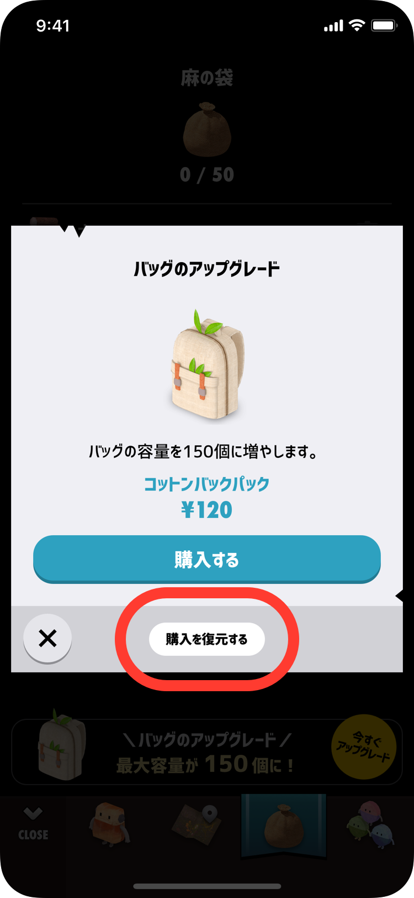

バッグやメールボックスのアップグレードなど、購入したにも関わらず画面に反映されない場合、以下をお試しください。
ご購入の画面へ移動し、「購入を復元する」をタップしてください。
※ インターネットに接続されている必要があります。

タップ後、しばらくしてエラーが出る場合、インターネットへの接続がうまくいっていないか、App Storeが不安定になっている場合があります。その場合、しばらくお待ちいただいてから再度お試しください。
上記の「購入を復元する」でも復元されなかった場合、Hopsの再起動をお試しください。
一度アプリを終了させてから、もう一度開きます。
復元、アプリの再起動でも復元がうまくいかない場合は、iPhone本体の再起動を行ってから、もう一度上記「購入画面で復元する」をお試しください。